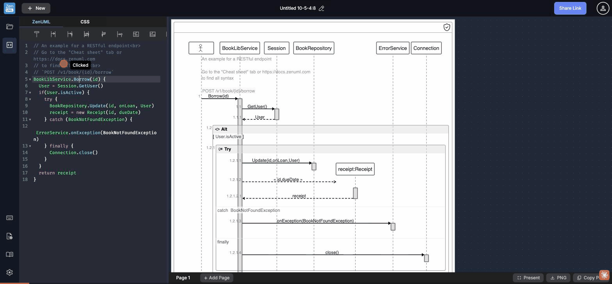

Test scenario: Syntax Error Feedback — invalid tokens, silent truncation, missing error UI in editor and diagram · ZenUML Web Sequence · 2026-05-10
Across all syntax error scenarios tested — invalid tokens, mid-document parse failures, and completely unparseable garbage — no error message is shown anywhere in the ZenUML UI. The diagram canvas does not display an error state. The editor shows no gutter indicators. The footer (i) button provides no error summary. When invalid syntax appears mid-document, the parser silently truncates the diagram at the first error and renders only the preceding valid content as if it were complete — with no indication that content below the error line was dropped.
For completely unparseable input (e.g. !!!BROKEN!!!SYNTAX!!!), the diagram renders a lone default participant icon — indistinguishable from a valid empty diagram — with zero error indication. A new user who types wrong syntax has no way to know their code is broken.
| Input type | Editor highlight | Gutter error icon | Diagram error msg | Content after error |
|---|---|---|---|---|
A -> B: hello (valid) | ✓ normal | ✓ none needed | ✓ renders | ✓ shown |
@@@ bad token @@@ | ~ pink tint | ✗ none | ✗ no error | ✗ silently dropped |
!!!BROKEN!!!SYNTAX!!! | ✗ no highlight | ✗ none | ✗ shows lone icon | ✗ N/A |
| Valid + error + valid | ~ line 2 pink | ✗ none | ✗ partial render | ✗ lines 3+ dropped |
Unclosed { | ~ auto-completed | ✗ none | ✓ renders (fixed) | ✓ shown |

When the ZenUML parser encounters invalid syntax, the diagram canvas does not show an error state. For mid-document errors (e.g. @@@ bad token @@@ on line 2), the canvas renders only the valid content before the error — showing a partial diagram with no indication it is incomplete. For fully unparseable input (e.g. !!!BROKEN!!!SYNTAX!!!), the canvas renders a lone participant icon — which looks identical to an intentionally empty diagram. There is no "Syntax error" banner, no error count, no line reference, no red border or warning color on the canvas. Users believe their diagram is correct when it is not.
The CodeMirror editor has no error annotations for invalid ZenUML syntax. Lines with parse errors get a faint pink syntax-highlighting tint (inconsistently — some invalid inputs show no highlighting at all), but there is no red squiggly underline, no gutter icon (🔴 or ⚠), and no hover tooltip explaining what is wrong with the line. A user looking at @@@ bad token here @@@ on line 2 sees only a differently-colored line with no explanation. They cannot tell whether the color means "this is a comment", "this is a string", "this is a keyword", or "this is an error."
When an error appears on line N of a multi-line diagram, the ZenUML parser halts and renders only lines 1 through N-1. Lines N+1 onward are silently discarded — they never appear in the diagram and produce no warning. In testing with a 3-line document (valid / invalid / valid), only line 1 appeared in the diagram. Line 3's C → D: world was completely dropped. A user who has a long diagram and accidentally introduces an error mid-document will see half their diagram disappear — with no indication of where the cutoff happened or how many lines were skipped.
The only error signal in the editor is a faint pink/magenta tint on lines that contain invalid tokens. This coloring: (1) is inconsistent — completely garbage input (!!!BROKEN!!!) receives no tinting at all, (2) is indistinguishable from intentional syntax coloring for strings or keywords to a colorblind user, (3) carries no semantic label — hovering the colored line reveals nothing, and (4) violates WCAG 1.4.1, which requires that color not be the sole means of conveying information. A red-blind user sees the pink-tinted lines as identical to normal code lines.
The editor auto-closes { to {} and ( to () immediately on typing. While this is ergonomic for normal use, it means a user who types an intentionally partial token to test what the diagram does (e.g. typing A.method( then pausing to look at the diagram) sees an auto-corrected valid result rather than an error state. Developers debugging ZenUML syntax are robbed of the ability to observe incremental parse states. Additionally, auto-completion that fires immediately with no opt-out can be disruptive for users who intended to type a different character.